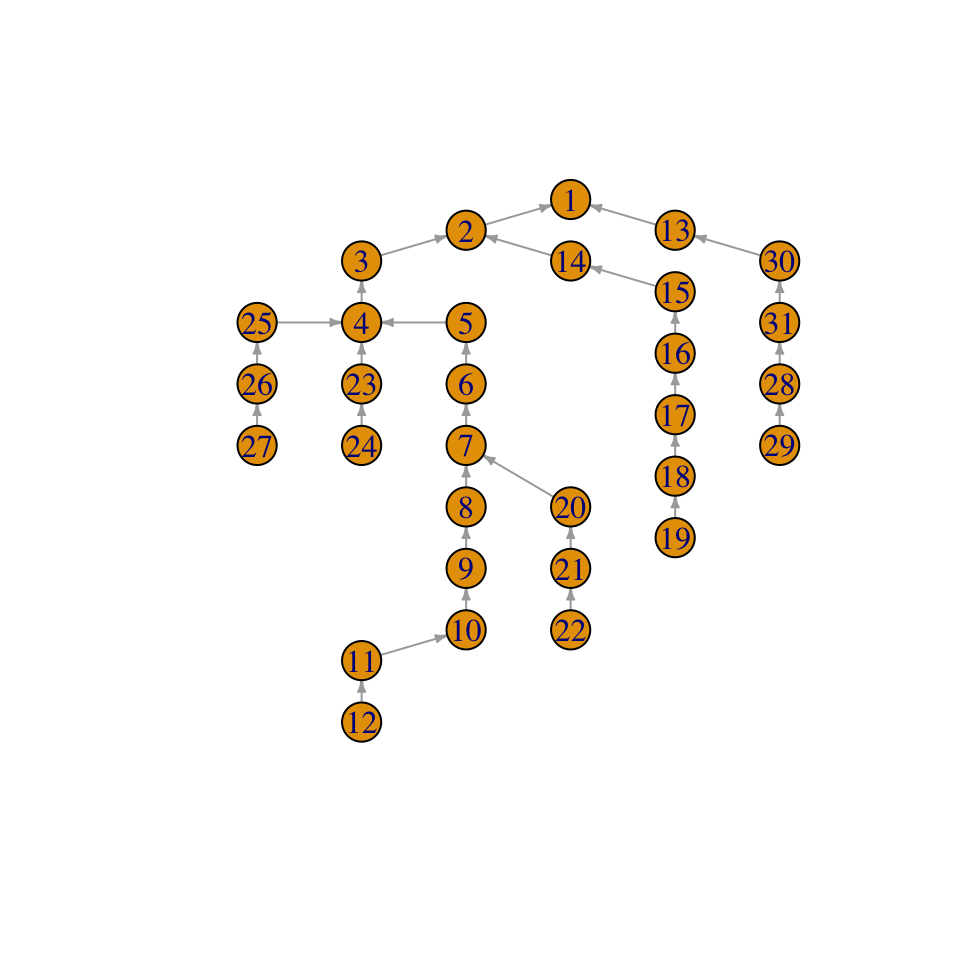

Introduction to Extremal Graphical Models
graphicalExtremes.Rmd1. Data
danube = graphicalExtremes::danube
DataEvents = danube$DataEvents %>%
as_tibble()
ggplot2::ggplot(DataEvents) +
geom_point(aes(x = X1, y = X2))
2. Multivariate Pareto Distribution
A MPD is defined as \(Y=...\)
Y <- data2mpareto(data=danube$DataEvents[,c(1,2)], p = .8)
plot(Y)